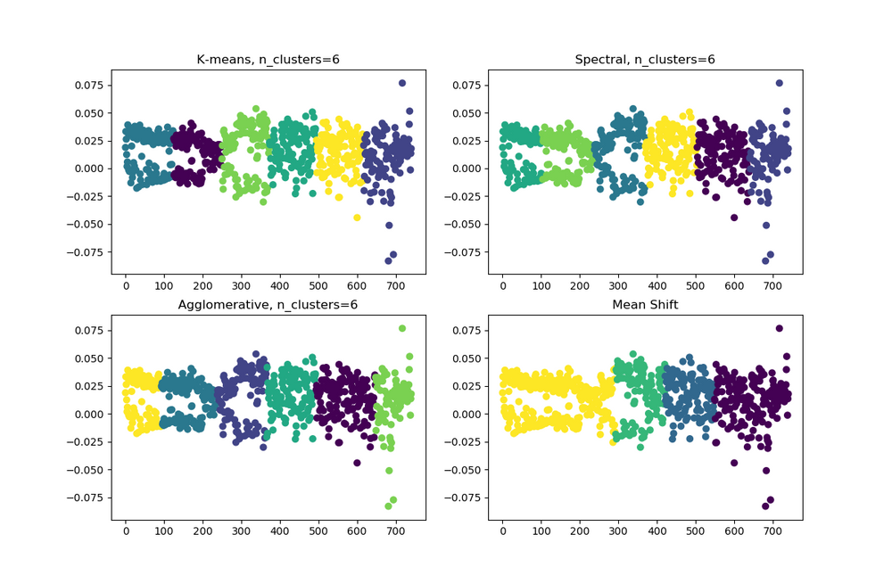

| ︎ | ︎ | ︎ |
The project goal is understanding and generating interactive narrative structures using Machine Learning models.
This project is inspired by the idea of Standard Patterns in Choice-Based Games, that analyzing interactive narrative structures of games as graph and design pattern.
The dataset is customized for ML libraries and scraped from TransverseReadingGallery.
Basic concept:
1. Convert graphs to feature matrix of vector embeddings*.
2. Categorize graphs by clustering algorithms.
3. Generate new graphs from categories using autoencoder.
Used libraries and ML models:
* [NetworkX](https://networkx.github.io/): graph properties (width, length, clustering, degree, cycle)
* [graph2vec](https://github.com/benedekrozemberczki/graph2vec): extracting feature matrix
* [scikit-learn](https://scikit-learn.org/stable/modules/clustering.html#clustering): K-means, Spectral, Agglomerative, Mean Shift Clustering
* [PyTorch geometric](https://rusty1s.github.io/pytorch_geometric/build/html/modules/nn.html#torch_geometric.nn.models.GAE): Autoencoder
*An embedding is a relatively low-dimensional space into which you can translate high-dimensional vectors. Embeddings make it easier to do machine learning on large inputs like sparse vectors representing words. Ideally, an embedding captures some of the semantics of the input by placing semantically similar inputs close together in the embedding space. An embedding can be learned and reused across models. (Google Developers Machine Learning Course)
ITP Thesis 2019, Youjin Chung
The clustering of graphs from their feature matrix looks like below.
I have tried to use different algorithms to classify them automatically, but I
could not find significant differences between groups when I checked the
properties of graphs.
When I look at the image of clustering visualization, it looks like rather the
problem of way of vector embedding than clustering algorithms themselves.
Since the X coordinate just represents the index of graph orders, significant
values are Y coordinates only.
To fix this problem, I need to try with the array of feature matrixes of each
graph, rather than just a feature matrix of whole graphs.

Instead of using computed categorization, I categorized graphs with names that
I made up. The names are inspired by graph properties.
Basic(tree)
They are basic directed graphs.
Mostly have tree shapes.
They look clean and straightforward.
Broad
They have larger width.
Short playthough, Strong replayablity.
Long
They have linear shapes.
Easy control of drama. Immersive storytelling through long playtime.
Merged
The graphs merge into certain points.
Those points usually represent important events in a story.
Clustered
Clustered group of nodes makes a bigger structure.
The groups of nodes could be detailed choices in a scene.
Cyclic
End nodes are redirected to early-stage nodes.
Players can find out new status while experiencing similar narratives.
Commonly used for time loops or geo geographic travel.
According to the categorization, the dataset is classified by graph
properties. Each class is a group of graphs which have prominent values of
graph properties.
(degree, average_clustering, cycle_basis, treewidth_min_degree,
all_pairs_shortest_path_length)
Labeling nodes with text: Make semantic narratives
Using similarity of document matrix of word embeddings and graph feature
matrix, assign sentences to node labels.
Visual representation of the comparison of generated and original graphs
According to the plan from last post. I’ve worked with two different
approaches.
1. Generate graphs with human-analyzed categories
2. Generate graphs with ML tools.
1-0. Generate graphs with human-analyzed categories
From Standard Patterns in Choice-Based
Games and Transverse Reading
Gallery I found some
features for graph representative of narrative.
-directed
-tree: depth, width(linearity)
-final choice
-merge:
group (clustering as subgraph)
merged for ending
main merge points in the middle
merged ending (one ending)
-multi edge (return to ancestor or return to itself)
-reversible
-circularity
-some important nodes
-whether keep the linearity of the whole story / not
-multi circles
1-1. Studied graph netowk with NetworkX for concepts and its visualization and
graph generation function.
some experiences for graph generation below.
It wasn’t easy as I expected, but I got general understanding if I got
familiar with networkx. Such as,
-make subsets for clustering
-link them in a tree structure
-select some nodes for merging
-link clusters
2, I moved to grpah embeddings for clustering and generation.
Whole process is like below:
Scrape graph data – > refine –> Make featured Matrix of whole graphs –> Clustering (Spectral) –> Get Vector embeddings of each graph –> Generate graphs in categories using Autoencoder [–>Get vector embeddings of Sample text –>fill the labels of generated graphs using the similarity of the generated vector of the sample text]
2-0. scrape graph data
they are stored as .txt .gv .tgf files
2-1. refine data
Since TRG is open-sourced database, they don’t have unified reference. Took a
lot of time to refine them to edgelist files as .json and .edgelist files
INPUT:
OUTPUT: edges and features of one graph{“edges”: [[2, 3], [3, 4], [3, 5], [4, 8], [4, 10], [5, 6], [5, 16], [6, 22], [6, 114], [8, 9], [9, 17], [9, 18], [10, 20], [10, 61], [10, 21], [11, 12], [11, 13], [12, 66], [12, 78], [13, 14], [13, 15], [16, 24], [16, 25], [17, 26], [17, 28], [18, 19], [19, 29], [19, 30], [20, 93], [21, 33], [21, 35], [22, 23], [23, 36], [23, 37], [24, 38], [24, 40], [25, 43], [25, 41], [25, 44], [25, 45], [26, 27], [27, 46], [27, 47], [28, 51], [29, 52], [29, 53], [30, 54], [30, 92], [32, 58], [32, 64], [33, 34], [34, 68], [34, 79], [35, 76], [35, 80], [36, 11], [37, 11], [38, 39], [39, 82], [39, 87], [40, 115], [40, 83], [47, 48], [48, 49], [48, 50], [49, 25], [50, 81], [54, 55], [55, 94], [55, 98], [55, 107], [56, 57], [56, 60], [58, 59], [59, 62], [59, 63], [61, 104], [61, 106], [64, 65], [65, 102], [66, 70], [66, 74], [70, 71], [71, 72], [71, 103], [79, 86], [79, 88], [83, 85], [83, 84], [88, 89], [89, 90], [89, 91], [92, 56], [93, 31], [93, 32], [94, 96], [94, 100], [96, 97], [104, 105], [105, 107], [105, 109], [106, 111], [106, 113], [109, 110], [111, 112], [114, 61]], “features”: {“2”: “1”, “3”: “3”, “4”: “3”, “5”: “3”, “8”: “2”, “10”: “4”, “6”: “3”, “16”: “3”, “22”: “2”, “114”: “2”, “9”: “3”, “17”: “3”, “18”: “2”, “20”: “2”, “61”: “4”, “21”: “3”, “11”: “4”, “12”: “3”, “13”: “3”, “66”: “3”, “78”: “1”, “14”: “1”, “15”: “1”, “24”: “3”, “25”: “6”, “26”: “2”, “28”: “2”, “19”: “3”, “29”: “3”, “30”: “3”, “93”: “3”, “33”: “2”, “35”: “3”, “23”: “3”, “36”: “2”, “37”: “2”, “38”: “2”, “40”: “3”, “43”: “1”, “41”: “1”, “44”: “1”, “45”: “1”, “27”: “3”, “46”: “1”, “47”: “2”, “51”: “1”, “52”: “1”, “53”: “1”, “54”: “2”, “92”: “2”, “32”: “3”, “58”: “2”, “64”: “2”, “34”: “3”, “68”: “1”, “79”: “3”, “76”: “1”, “80”: “1”, “39”: “3”, “82”: “1”, “87”: “1”, “115”: “1”, “83”: “3”, “48”: “3”, “49”: “2”, “50”: “2”, “81”: “1”, “55”: “4”, “94”: “3”, “98”: “1”, “107”: “2”, “56”: “3”, “57”: “1”, “60”: “1”, “59”: “3”, “62”: “1”, “63”: “1”, “104”: “2”, “106”: “3”, “65”: “2”, “102”: “1”, “70”: “2”, “74”: “1”, “71”: “3”, “72”: “1”, “103”: “1”, “86”: “1”, “88”: “2”, “85”: “1”, “84”: “1”, “89”: “3”, “90”: “1”, “91”: “1”, “31”: “1”, “96”: “2”, “100”: “1”, “97”: “1”, “105”: “3”, “109”: “2”, “111”: “2”, “113”: “1”, “110”: “1”, “112”: “1”}}
2-2. get featured matrix for all graphs
I want to cluster all graphs as a community and cluster them. I needed a
feature matrix of all.
I used graph2vec
resulted as 740X128 featured matrix.
2-3. Spectral Clustering
Used Scikit Spectral Clustering
OUTPUT:
[[ 0.00000000e+00 -1.33919954e-01 -3.49342301e-02 … -2.94427741e-02
5.96931651e-02 -5.88354319e-02]
[ 1.00000000e+00 -1.80719540e-01 -5.38276508e-02 … -4.21662219e-02
8.19268078e-02 -6.88555017e-02]
[ 2.00000000e+00 -1.84299678e-01 -5.86715415e-02 … -4.71317507e-02
7.40889013e-02 -7.09827319e-02]
…
[ 7.38000000e+02 -2.13109672e-01 -7.86957815e-02 … -5.85902780e-02
9.21207964e-02 -9.67374071e-02]
[ 7.39000000e+02 -1.63595110e-01 -4.08652201e-02 … -4.35982235e-02
7.04719201e-02 -6.86825290e-02]
[ 7.40000000e+02 -1.95438027e-01 -5.46010248e-02 … -5.19301780e-02
9.27845910e-02 -1.01948090e-01]]
**[1 1 1 1 1 1 1 1 1 1 1 1 1 1 1 1 1 1 1 1 1 1 1 1 1 1 1 1 1 1 1 1 1 1 1 1 1
1 1 1 1 1 1 1 1 1 1 1 1 1 1 1 1 1 1 1 1 1 1 1 1 1 1 1 1 1 1 1 1 1 1 1 1 5
5 5 5 5 5 5 5 5 5 5 5 5 5 5 5 5 5 5 5 5 5 5 5 5 5 5 5 5 5 5 5 5 5 5 5 5 5
5 5 5 5 5 5 5 5 5 5 5 5 5 5 5 5 5 5 5 5 5 5 5 5 5 5 5 5 5 5 5 5 5 5 5 5 5
5 5 5 5 5 5 5 5 5 5 5 5 5 5 5 5 5 5 5 5 5 7 7 7 7 7 7 7 7 7 7 7 7 7 7 7 7
7 7 7 7 7 7 7 7 7 7 7 7 7 7 7 7 7 7 7 7 7 7 7 7 7 7 7 7 7 7 7 7 7 7 7 7 7
7 7 7 7 7 7 7 7 7 7 7 7 7 7 7 7 7 7 7 7 7 7 7 7 7 7 7 7 7 7 7 7 7 7 7 7 7
7 7 7 7 7 7 7 7 7 7 7 7 7 4 4 4 4 4 4 4 4 4 4 4 4 4 4 4 4 4 4 4 4 4 4 4 4
4 4 4 4 4 4 4 4 4 4 4 4 4 4 4 4 4 4 4 4 4 4 4 4 4 4 4 4 4 4 4 4 4 4 4 4 4
4 4 4 4 4 4 4 4 4 4 4 4 4 4 4 4 4 4 4 4 4 4 4 4 4 4 4 4 4 4 4 4 4 4 4 4 4
4 4 4 4 2 2 2 2 2 2 2 2 2 2 2 2 2 2 2 2 2 2 2 2 2 2 2 2 2 2 2 2 2 2 2 2 2
2 2 2 2 2 2 2 2 2 2 2 2 2 2 2 2 2 2 2 2 2 2 2 2 2 2 2 2 2 2 2 2 2 2 2 2 2
2 2 2 2 2 2 2 2 2 2 2 2 2 2 2 2 2 2 2 2 2 2 2 2 2 2 2 2 2 2 2 2 2 2 0 0 0
0 0 0 0 0 0 0 0 0 0 0 0 0 0 0 0 0 0 0 0 0 0 0 0 0 0 0 0 0 0 0 0 0 0 0 0 0
0 0 0 0 0 0 0 0 0 0 0 0 0 0 0 0 0 0 0 0 0 0 0 0 0 0 0 0 0 0 0 0 0 0 0 0 0
0 0 0 0 0 0 0 0 0 0 0 0 0 3 3 3 3 3 3 3 3 3 3 3 3 3 3 3 3 3 3 3 3 3 3 3 3
3 3 3 3 3 3 3 3 3 3 3 3 3 3 3 3 3 3 3 3 3 3 3 3 3 3 3 3 3 3 3 3 3 3 3 3 3
3 3 3 3 3 3 3 3 3 3 3 3 3 3 3 3 3 3 3 3 3 3 3 3 3 3 3 3 3 3 3 3 3 3 3 3 3
6 6 6 6 6 6 6 6 6 6 6 6 6 6 6 6 6 6 6 6 6 6 6 6 6 6 6 6 6 6 6 6 6 6 6 6 6
6 6 6 6 6 6 6 6 6 6 6 6 6 6 6 6 6 6 6 6 6 6 6 6 6 6 6 6 6 6 6 6 6 6 6 6 6
6]
** SpectralClustering(affinity=’rbf’, assign_labels=’discretize’, coef0=1,
degree=3, eigen_solver=None, eigen_tol=0.0, gamma=1.0,
kernel_params=None, n_clusters=8, n_init=100, n_jobs=None,
n_neighbors=10, random_state=0)
They are labeled as 8 different categories.
2-4. Date refine for graphauto encoder.
Elevator Pitch: a generative non-linear narrative tool as a website. Based on common design patterns of non-linear narrative, users can develop and edit their own structure. This tool is for writers of interacitve media, such as video games, non-linear flim. (You can imagine branching narratives as one non-linear narrative.)
New ideas:
Make vector embedding of vector embeddings.
Summarization and Named entity recognition for user sample text.
Data: 1. Trasverse Reading Gallery
User Scenario:
A user is given common design pattern –> they can choose one of them.
A user put a sample text of their own.
The website generates an interactive structure out of the choices.
A user can interacte with the structure, while the structure maintains the
homeostasis.
After the Quick and Dirty show, I got resources from Allison Parrish.
For the current state, the most compelling task is ‘how to get branch-
structured data’.
Instead of scrapping all the different formatted hyperlink literature, She
introduced me to Transverse Reading
Gallery.
It would be great if they also have an algorithm that yields the structure, at
least they provide a lot of examples.
Or, The database of Twine or Inform 7 could be better approach to grab data.
Twine / Inform 7 data are updated to IFDB.
Once extracting structure is done, the next part will be a comparison of the
similarity of vector embeddings.
Her resources are like below:
vector representations of graphs python
https://networkx.github.io/documentation/stable/reference/index.html
https://github.com/palash1992/GEM
https://github.com/chihming/awesome-network-embedding
Also, it looks like I can hack Universal Sentence Encoder to check the similarity.
After the last post, I changed the plan to:
1. Collect the scripts from non-linear narrative works.
2. Restructure the scripts according to the branches.
3. Get word embedding of the whole script and the segmented scripts.
4. By connecting the nodes of narrative, make templates of popular design patterns of non-linear narratives.
5. Make vector representation of design patterns by word embeddings of summarization and connection of nodes above, and train them with machine learning to generalize them.
6. Make a website for visualization of those narrative structures and make some interactivity based on NLP schemes, such as similarity and vector graph of the sentence.
I tested some NLP tools with The Stanley Parable script. It is a scraped raw script from fandom wiki, and I restructured a bit manually, such as segmenting branches.
1. Word Embeddings:
I used fastText and put the whole script as input.
Stanley, 0.11036 0.19599 0.10368 -0.12154 0.36423 -0.038838 -0.26782 0.039779 -0.063258 0.28379 -0.19971 -0.12769 -0.10655 0.27762 -0.022131 -0.093179 0.02998 -0.017353 0.10615 -0.097644 -0.18653 0.20686 -0.076636 -0.091545 -0.22738 0.077775 -0.17065 0.17681 -0.057035 0.2657 0.0012816 -0.01467 0.12992 0.14625 0.13699 -0.12364 0.1867 -0.077875 0.16596 -0.28863 0.2378 0.12956 -0.32302 0.16064 0.064357 -0.08763 0.13724 0.081201 -0.004335 -0.080387 -0.052985 -0.052192 -0.05937 0.10198 0.070155 -0.27296 0.052245 0.1138 0.32778 -0.0047393 0.23054 0.07227 -0.096053 0.092692 0.12884 0.084715 0.078968 0.05983 -0.044019 -0.32649 -0.069037 0.089452 0.080534 0.1348 -0.18219 0.045688 0.14903 0.07553 0.17499 -0.2807 0.073067 0.039466 0.24898 0.067009 0.041393 -0.15675 0.21626 -0.049187 0.069402 0.040589 -0.1897 -0.10088 0.13732 0.11041 -0.080966 0.064824 -0.069116 0.18477 0.087051 0.0018625
Stanley has 100 dimension vector, which is hard to visualize and conceptualize in 3 dimensions.
2. Summarization:
used gensim, and it has
fastText APIs also, (as far as I know).
My favorite test result is Mariella ending.
Raw input text:
[Going downstairs]
But Stanley just couldn’t do it.
He considered the possibility of facing his boss, admitting he had left his post during work hours, he might be fired for that. And in such a competitive economy, why had he taken that risk?
All because he believed everyone had vanished? His boss would think he was crazy.
And then something occurred to Stanley: Maybe, he thought to himself, maybe I am crazy. All of my coworkers blinking mysteriously out of existence in a single moment for no reason at all?
None of it made any logical sense. And as Stanley pondered this he began to make other strange observations.
For example, why couldn’t he see his feet when he looked down? Why did doors close automatically behind him wherever he went?
And for that matter, these rooms were starting to look pretty familiar, were they simply repeating?
No, Stanley said to himself, this is all too strange, this can’t be real, and at last he came to the conclusion that had been on the tip of his tongue, he just hadn’t found the words for it.
I’m dreaming! he yelled, This is all a dream!
What a relief Stanley felt to have finally found an answer, an explanation. His coworkers weren’t actually gone, he wasn’t going to lose his job, he wasn’t crazy after all!
And he thought to himself, I suppose I’ll wake up soon, I’ll have to go back to my boring real life job pushing buttons, I may as well enjoy this while i’m still lucid.
So he imagined himself flying, and began to gently float above the ground.
Then he imagined himself soaring through space on a magical star field, and it too appeared!
It was so much fun, and Stanley marveled that he had still not woken up. How was he remaining so lucid?
And then perhaps the strangest question of them all entered Stanley’s head, one he was amazed he hadn’t asked himself sooner:
Why is there a voice in my head, dictating everything that i’m doing and thinking?
Now the voice was describing itself being considered by Stanley, who found it particularly strange. I’m dreaming about a voice describing me thinking about how it’s describing my thoughts, he thought!
And while he thought it all very odd and wondered if this voice spoke to all people in their dreams, the truth was that of course this was not a dream. How could it be?
Was Stanley simply deceiving himself? Believing that if he’s asleep he doesn’t have to take responsibility for himself?
Stanley is as awake right now as he’s ever been in his life.
Now hearing the voice speak these words was quite a shock to Stanley. After all, he knew for certain beyond a doubt that this was, in fact, a dream!
Did the voice not see him float and make the magical stars just a moment ago? How else would the voice explain all that?
This voice was a part of himself too, surely, surely if he could just….
He would prove it. He would prove that he was in control, that this was a dream.
So he closed his eyes gently, and he invited himself to wake up. [Stanley closes his eyes] He felt the cool weight of the blanket on his skin, the press of the mattress on his back,
the fresh air of a world outside this one. Let me wake up, he thought to himself.
I’m through with this dream, I wish it to be over. Let me go back to my job, let me continue pushing the buttons, please, it’s all I want.
I want my apartment, and my wife, and my job. All I want is my life exactly the way it’s always been.
My life is normal, I am normal. Everything will be fine.
I am okay.
[Opens eyes and sees that it didn’t work]
Stanley began screaming. Please someone wake me up! My name is Stanley! I have a boss! I have an office! I am real!
[Screen slowly tints red, music and Narrator grow more frantic]
Please just someone tell me i’m real! I must be real! I must be! Can anyone hear my voice?! Who am I? Who am I?!
And everything went black.
Mariella
This is the story of a woman named Mariella.
Mariella woke up on a day like any other. She arose, got dressed, gathered her belongings, and walked to her place of work.
[Screen shows an aerial shot of a man (presumably Stanley) lying face-down on the sidewalk. Mariella is standing near, looking at him and covering her mouth in shock, suitcase on the ground by her feet.]
But on this particular day, her walk was interrupted by the body of a man who had stumbled through town talking and screaming to himself and then collapsed dead on the sidewalk.
And although she would soon turn to go call for an ambulance, for just a few, brief moments, she considered the strange man.
He was obviously crazy; this much she knew. Everyone knows what crazy people look like.
And in that moment, she thought to herself how lucky she was to be normal.
I am sane. I am in control of my mind. I know what is real, and what isn’t.
It was comforting to think this, and in a certain way, seeing this man made her feel better. But then she remembered the meeting she had scheduled for that day,
the very important people whose impressions of her would affect her career, and, by extension, the rest of her life.
She had no time for this, so it was only a moment that she stood there, staring down at the body.
And then she turned and ran.
Summarization:
His coworkers weren’t actually gone, he wasn’t going to lose his job, he wasn’t crazy after all!And he thought to himself, I suppose I’ll wake up soon, I’ll have to go back to my boring real life job pushing buttons, I may as well enjoy this while i’m still lucid. So he imagined himself flying, and began to gently float above the ground. Then he imagined himself soaring through space on a magical star field, and it too appeared!It was so much fun, and Stanley marveled that he had still not woken up.
Mariella is standing near, looking at him and covering her mouth in shock, suitcase on the ground by her feet.]But on this particular day, her walk was interrupted by the body of a man who had stumbled through town talking and screaming to himself and then collapsed dead on the sidewalk. And although she would soon turn to go call for an ambulance, for just a few, brief moments, she considered the strange man. He was obviously crazy; this much she knew.
Everyone knows what crazy people look like. And in that moment, she thought to herself how lucky she was to be normal. I am sane.
3. Visualization
http://davidpiegza.github.io/Graph-Visualization/index.html
https://experiments.withgoogle.com/t-sne-map
4. What Left?
-How to automatically branches out from a raw script: I was thinking to grab web hyperlink games based on Twine.
-How to generalize design patterns. : http://www-users.york.ac.uk/~pjh503/mathematical_model/math_model8.pdf
-Can I generate a flowchart?
I made a plan on how to work with images (screenshots) to extract a narrative
from gameplay.
1. Grab gameplay videos from youtube.
2. take images from the videos per 60 seconds.
3. Use OCR + Object detection to extract info from each frame.
4. Analyze the flow of info (using some deep learning tools).
I expected that reading texts from screenshots will be easy, since the
subtitles in the game are very clear, literally written over the image.
However, it wasn’t.
Based on the games I chose. I downloaded walkthrough videos from youtube
without comments.
Used Youtube-dl.
-Papers, please
-The Stanley Parable
-Undertale: Genocide path
-Undertale: Pacifist path
-One Shot: Solstice path
-One Shot: Original path
-Pony Island.
Extract images every 60 frames for every video.
Used python code below:
import cv2import sys
vidcap = cv2.VideoCapture(sys.argv[1])
success,image = vidcap.read()# image is an array of array of [R,G,B] values
count = 0while success: success,image = vidcap.read() if count%60==0: cv2.imwrite(“frame%d.jpg” % count, image) # save frame as JPEG file frame%d.jpg if cv2.waitKey(10) == 27: # exit if Escape is hit break count += 1
Using Tesseract OCR, read subtitles and text on screenshots and formatted as JSON files. I used a few OCRs, Tesseract was working mostly fine to use.
I tried inverting the color of screenshots to enhance the accuracy but didn’t
help.
At the same time, I was working on ImageAI to detect objects on screenshots,
but they weren’t good for I used a pre-trained model based on Microsoft’s
COCO. I needed to customize the model for each game.
Also, the result of Tesseract OCR was pretty good, but n
For example, Employ number 427 is a critical concept to lead the whole
narrative, but the OCR read it wrong.
Here’s the example of bad readings:
Nearly impossible to know what’s happening in the game.
a funny thing is I also collected scripts of the games written by fandom. They
are accurate, actually much better than OCR results.
For better performance, rather make things work, I switched to working on
scripts only, which is good for:
1. requiring lower performance and time to train: more iteration possible.
2. can use awesome NLP stuff that already exists: save my time.
This trial and error are helping me not only for my thesis but also for my career. As my final semester, I sometimes doubt my decision for choosing a non-engineering master program. This procedure helps me what I would have done if I majored CS instead of ITP, with getting to know the difference of improving one algorithm versus using what I need for my idea each time.
Thanks to April, I learned differnet design patterns of narrative, which I
should have known before working on the project.
It‘s a bit fusioned idea of how narrative and disclosure works, but really
critical concept to know when I work on my thesis.
Before ITP:
an HCI research engineer working with computer vision
Smile face-in | Posture & Eye Care | Motion Recognition
Suprememebot
Tweequency
Generated Narration
recently working on … Unity ML, Azure NLP
Thesis Idea for now:
The implementation of Machine Learning in Digital Games
Narrative in games
Image infomation + text + behavior
key : how to train those different data as a set?
goal : generate a narrative from the model. => output will be also consist of img, text, interaction infomation
question : have to be a narrative?